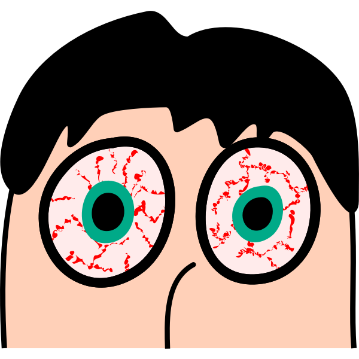
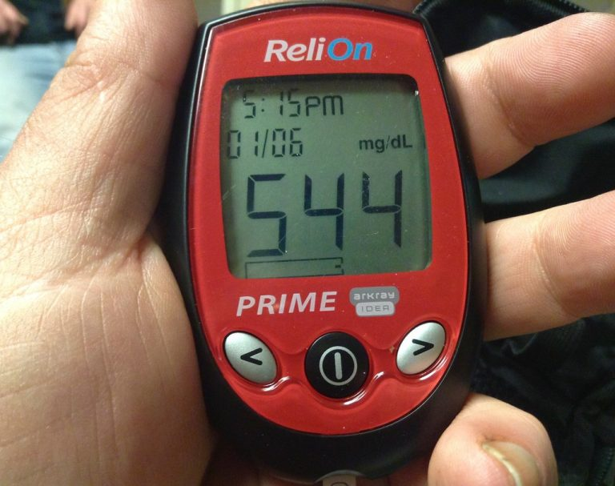
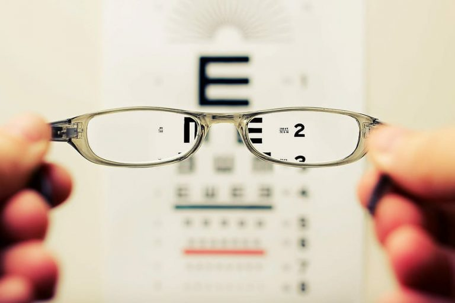

When we see a six month old baby holding a tablet, the baby looks so adorable. It’s quite surprising how fast our children learn to play on their electronic devices. Life has never been so easy with the creation of electronic devices now. We spend more and more time on electronic devices a day: two hours, five hours, eight hours … … However, the increase in screen time has led to an increase of eye problems for our children. It is time to initiate a change before it is too late, either for the benefit of ourselves, our children, or both. To improve eye health, reduce screen time and start adding more nutrient rich foods that are beneficial to our eyes, such as carrots, dark leafy greens, peas, pumpkins, etc.
Blue Light Screen Filters
Blue light from the electronic device screen can cause strain to your eyes. Long-term and persistent exposure to blue light can damage your retina and cause premature macular degeneration. The best way to prevent blue light is to cut back on your screen time. If a computer must be used for working, a computer screen filter can be considered. Another option is to buy a pair of blue light blocking glasses. These yellow-tinted glasses can help ease eye strain from screens. This is what I normally do for protecting my eyes.
Eye Lubricants

In the past, too much screen time hurt my eyes, and made my eyes turn very red. The red blood vessels were seemingly crawling around my eyes. The red dilated blood vessels occurred because I had strained my eyes too much and the brightness of the screen caused my eyes to be very dry. As a solution, I used over-the-counter eye drop for red eyes, which worked immediately after use, but it only gave me temporary relief. The best way to achieve long-lasting relief is to give enough time for eyes to rest. Use only eye lubricants with no active ingredients to add moisture for dry eyes. The over-the-counter red eye solution drop use may cause a medication dependency.
Vitamin A and Beta-Carotene
Beta-carotene is an orange pigment (a type of carotenoids) that will turn into vitamin A in the body. Vitamin A is an important nutrient for eye health. Your retina needs vitamin A to work properly. Your eyes cannot produce moisture without adequate vitamin A. Vitamin A deficiency can cause night blindness and impaired vision. Good vitamin A food sources include orange-pigmented vegetables and fruits, dark leafy greens, animal livers, eggs, etc. Examples include cantaloupes, carrots, pumpkins, sweet potatoes, kale, spinach, broccoli, etc. The RDA for vitamin A is 700-900 mcg/day for adults.
Zeaxanthin and Lutein
Zeaxanthin and lutein are two more types of carotenoids. Researchers have approved that zeaxanthin and lutein can reduce the risk of aging related chronic eye diseases, such as cataracts and macular degeneration. Lutein and zeaxanthin are deposited at the retina of the eyes. They help filter harmful blue light and protect eyes from blue light damage. The food sources for zeaxanthin and lutein are dark leafy greens such as kale, spinach, collards, turnip greens, etc. The recommended dietary intake for zeaxanthin is 2 mg/day, and for lutein is 10 mg/day. If your dietary intake does not meet your daily zeaxanthin and lutein needs, you may want to consider taking zeaxanthin and lutein supplements.
Maintain Your Blood Sugar Levels in Healthy Range

Blindness (retinopathy) is one of the common health complications in diabetes. The chronic uncontrolled high blood sugar that damages the optic nerves and blood vessels in the retina. It is the leading cause of blindness in the US. It is important to manage your blood sugar properly. Follow your doctor’s, dietitian’s or diabetes educator’s recommendations on your daily meal plans and insulin use.
Quit Smoking
The oxidative stress from smoking cigarettes can cause damage to the optic nerve and macular degeneration. You may require a higher amount of antioxidants or carotenoids to offset the damage of smoking.
Eye Rest and Eye Exercise

When you feel that your eyes stressed, look away from the screen of your electronic devices. Rest your eyes for at least 20-30 minutes and look at green plants that are far away. Do some eye exercises to improve blood circulation in your eyes. Blink more often if your eyes feel dry. Wear UV blocking sunglasses if you are going to spend a lot of time outdoors. Eat a nutrition balanced diet with plenty of orange or dark green vegetables. Please see an eye doctor when your eyes don’t feel right. Early eye disease detection and prevention are the keys to maintaining healthy eyes.